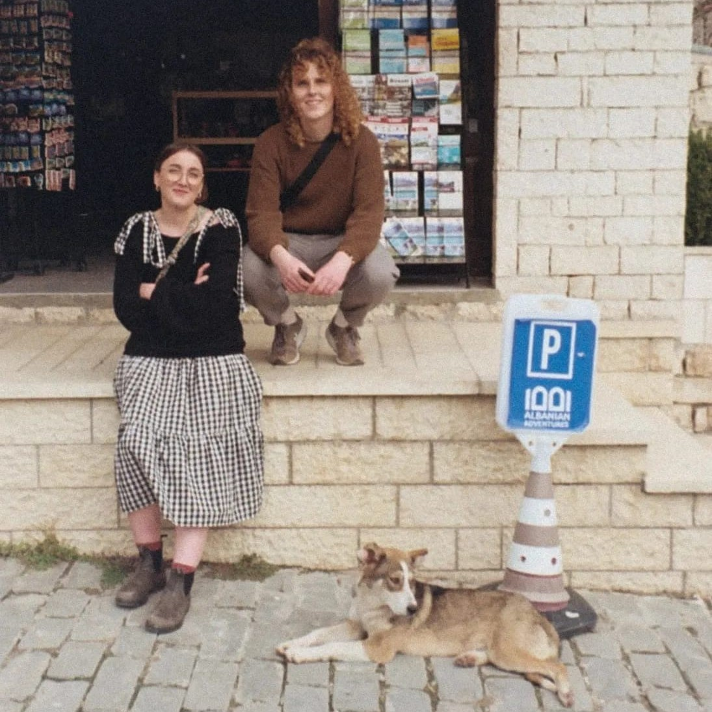

Music with the bog factor is strange, mythic, joyous and rooted in place. From folk revival and pagan boogie to spiritual jazz and twisted bossa nova. The duo seek out sounds from deep within the bog to bring merriment wherever they go.
Residents on EHFM
Inspired by nature, folk and the neolithic, we take our name from the bogginess scale on walkhighlands.co.uk. They define level 5 as “It's a swamp. Snorkel recommended”

A trans woman, engineer, hill-walker and bike-rider. She's a fan of all things strange and funky - tunes, cheeses, jumpers, places. Big on DIY, she makes and fixes things. Sophie also brings the factoids to Bog Factor, so hold on to your bonnets because she will be telling you something about a peat cutting contraption.
A florist and artist from the Highlands, drawing inspiration from the wild and ever-changing Scottish landscape.
She works under the moniker Machair, a Gaelic word for the fertile, low-lying grassy plains found only on the exposed northwest shores of Scotland and Ireland, particularly in the Outer Hebrides.